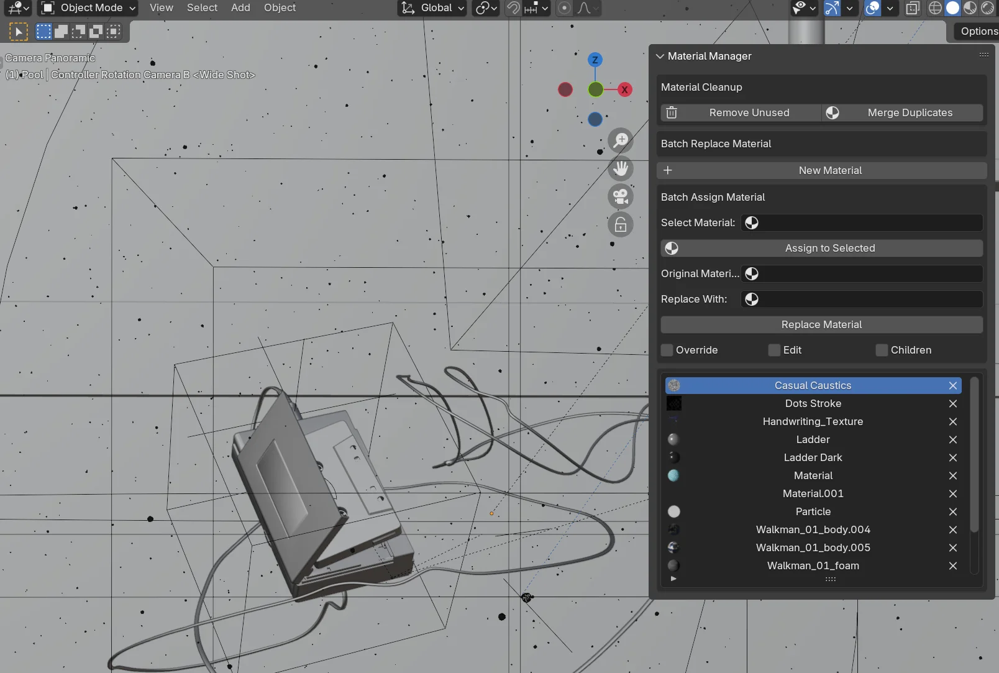
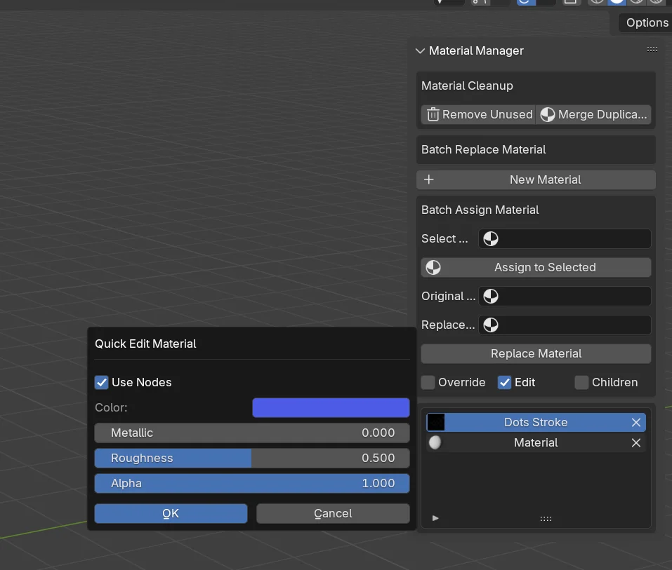

Material Manager Pro
简介
Material Manager Pro is a powerful Blender add-on designed to simplify and optimize your material workflow. Whether you're working on architectural visualizations, game assets, or general 3D projects, this tool provides an efficient solution for managing, replacing, and assigning materials across multiple objects.
键 Benefits
- Batch material operations that save hours of manual work.
- Intelligent handling of parent-child relationships.
- 快速的 access to common material properties.
- 智能的 cleanup tools for organizing materials.
- User-friendly interface seamlessly integrated into Blender's UI.
兼容性:
Material Manager works with Blender 4.2 and above, utilizing modern Blender features for optimal performance.

位置
After installation:
查找 the "Material Manager Pro" tab in the 3D View's sidebar (press N).
主要功能
1. 材质清理工具
- 移除未使用：从场景中删除未使用的材质。
- 合并重复项：合并具有相同基本名称的重复材质（如 Material.001、Material.002）。
2. 批量替换材质
- 原始材质：选择要被替换的材质。
- 替换为：选择目标材质。
- 替换材质：执行替换。
选项：
- 覆盖：完全替换并删除原始材质。
- 编辑：切换快速编辑模式。
- 子对象：将操作应用到所有子网格对象。
3. 批量指定材质
- 选择材质：选择要指定的材质。
- 指定给选中对象：将选定材质应用于所选对象。
子对象选项：
勾选后，材质将自动应用于所有子网格对象。
4. 材质列表
- 显示场景中的所有材质。
- 每个材质条目包含：
- 预览图标：材质的视觉表示。
- 材质名称：可点击以快速指定。
- 删除按钮：移除特定材质。
5. 快速编辑模式

- 启用 编辑: Check the "编辑" option in the interface.
- 编辑 Properties:
6. 创建新材质
- Click the "New 材料" button to create a new material.
使用技巧
批量替换材质
- Select the material to replace in "原始 材料."
- Choose the target material in "Replace With."
- Decide if Override Mode is required.
- Click "Replace 材料" to execute.
批量指定材质
- Select target objects.
- Check "Children" to process child objects.
- Assign 材料s:
- 选项 1: Choose material in "Select 材料" and click "Assign to Selected."
- 选项 2: Directly click a material name in the 材料 列表.
材质清理
- Use "移除 Unused" to delete unused materials.
- Use "合并 复制s" to combine duplicate materials.
- 移除 specific materials using the delete button (
X) in the 材料 列表. - Use 快速的 编辑 Mode to adjust material properties.
快速编辑材质
- Check the "编辑" option.
- Click a material name in the list.
- 调整 material properties in the popup dialog.
重要说明
- Override Mode deletes original materials permanently.
- 后up your file before performing batch operations.
- 处理ing many objects may take time.
- Some operations cannot be undone—proceed with caution.
最佳实践
- 开始 by cleaning up your material library.
- 创建 new materials as needed.
- Use batch tools for efficient material processing.
- Fine-tune material properties with 快速的 编辑 Mode.
技术要求
- Blender 4.2 or higher.
- Sufficient system memory for large-scale operations.
- A graphics card that supports material previews.
故障排除
- If materials aren't applying:
- 验证 object selection.
- Ensure materials have proper node setups.
- Check the "Children" option for hierarchy-related operations.
- Confirm that materials are not locked or protected.
键盘快捷键
N: Toggle sidebar visibility.- 快速的 access to tools via material list clicks.
- Use standard Blender undo/redo for supported operations.
附加提示
- Use Override Mode for complete material replacement.
- 组织 materials before batch operations.
- 监视 system resources during large operations.
- Regularly save your project during batch processes.
支持
- Refer to Blender documentation for basic material concepts.
- 报告 issues through the add-on's official support channels.
- Keep the add-on updated for the best performance.
This guide outlines the key features and workflows of the Material Manager Pro add-on. For advanced queries, consult detailed documentation or reach out to the support team.
支持 Blender Foundation
我们相信回馈让我们的工作成为可能的社区。每个月，我们都会将插件收入的一部分用于支持 Blender 基金会。感谢您帮助我们为开源创意的未来做出贡献。